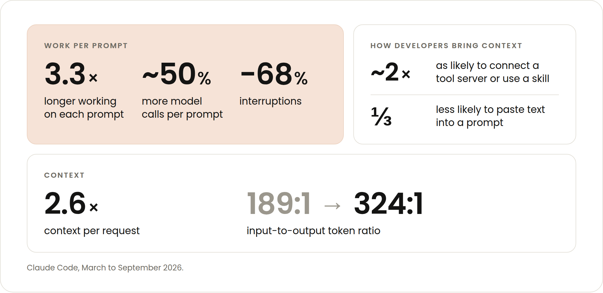
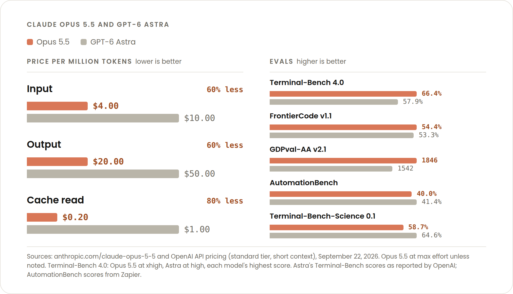

최신 Opus 모델은 요즘 개발자들이 코딩하는 방식에 맞춰 비용을 최적화하도록 가격이 책정되고 훈련되었다.
우리는 Claude Opus 5.5가 토큰 단위로 과금되는 일반적인 워크로드에서 Opus 5보다 약 40% 저렴하게 실행된다고 추정한다. 개발자에게는 그 절감이 정확히 어떻게 쌓이는지가 중요하다.
토큰 단위로 요금을 내고 있다면, 더 오래 실행되고 컨텍스트가 더 큰 세션에서 가장 큰 비용 차이를 보게 될 것이다. 바로 지난 6개월 동안 부쩍 늘어난 유형의 Claude Code 세션이다.
이 글에서는 요즘(그리고 아마 앞으로도) 개발자들이 코딩하는 방식에 대해 Opus 5.5가 비용 효율적인 이유를 그 작동 원리 차원에서 깊이 들여다본다.
우리는 2026년 3월부터 9월까지 개발자들이 Claude Code를 어떻게 사용해 왔는지 집계 데이터를 뽑아 보았다. 모델 역량이 좋아지면서 개발자들은 에이전트를 점점 더 정교한 방식으로 배치하고 있다. 세션당 프롬프트 수는 꾸준했지만, 몇 가지 흥미로운 행동이 발견되었다.

이 모든 것은 개발자들이 더 열심히 일하고 더 많은 정보를 가진 Claude를 더 크고 더 열린 과제로 향하게 하고 있음을 가리킨다. 이런 유형의 세션에서는 컨텍스트 엔지니어링(context engineering)의 경제적 영향이 복리로 불어난다.
간단히 말해 Claude가 더 많은 토큰을 읽는다. 따라서 제공하는 컨텍스트가 전부 꼭 필요한 것인지, 그리고 그 컨텍스트의 최대한 많은 부분이 캐시에서 읽히는지 확인해야 한다.
오래 실행되고 컨텍스트가 무거운 세션을 더 비용 효율적으로 만드는 변화는 세 가지다. 가격, 모델 행동, 그리고 Claude Code 하네스(harness)의 변화다. 하나씩 살펴보자.
토큰 단위로 과금되는 사용에 대해 우리는 입력·출력 토큰 비용을 20% 내렸고, 캐시된 토큰을 읽는 가격은 60% 내렸다. 후자의 인하가 중요한 이유는, 에이전틱 작업과 코딩 작업 비용의 대부분을 캐시 읽기가 차지하기 때문이다.
그리고 방금 이야기했듯 요청당 컨텍스트는 6개월 만에 대략 2.6배 늘었으니, 절감은 올바른 방향으로 흘러가고 있다. 토큰 단위로 과금되는 사용자에게 같은 가격 변화는 6개월 전보다 오늘의 Claude Code 트래픽에서 더 많이 절감된다. 이제 청구서의 더 많은 부분이 다시 읽히는 컨텍스트이기 때문이다.
이 글의 게시 시점 기준으로, Opus 5.5의 캐시된 토큰 가격은 경쟁 모델의 5분의 1이면서도 성능은 그들을 앞선다.

이것은 Opus 5.5 자체보다는, 지난 6개월간 Claude Code에 추가한 여러 기능의 결과에 가깝다. 방금 살펴본 코딩 세션 추세를 보면 캐시 미스(cache miss) 비율이 더 높아졌으리라 예상하겠지만, 실제로는 그 반대다. 캐시를 놓치는 입력이 50% 넘게 줄었다.
예를 들어, 로그인 갱신 같은 작은 생채기로 의도치 않게 캐시가 깨지는 일을 더 어렵게 만들었다. 대화 도중 지시문을 추가하거나 도구를 온디맨드로 로드하는 것 같은 더 큰 동작으로 캐시가 깨지는 것도 더 어렵게 만들었다. Opus 5.5와 Fable 5.1 같은 최신 모델에서는 이제 캐시를 초기화하지 않고도 세션 중에 effort 수준을 바꿀 수 있다.
더 오래 실행되는 세션과 위임된 세션에서도 캐시를 더 유용하게 만들었다. API 키와 클라우드 제공자를 쓰는 개발자도 이제 1시간 캐시 수명(구독자에게는 이미 있었다)을 설정할 수 있고, 포크된(forked) 서브에이전트는 같은 컨텍스트 비용을 다시 내는 대신 부모의 캐시에서 시작한다.
Opus 5.5는 같은 과제를 끝내는 데 다른 모델보다 더 적은 턴이 필요할 수 있다. Zeta Labs는 Opus 5보다 과제당 턴 수와 도구 호출이 줄었으면서도, 비용은 거의 절반이었고 가장 어려운 과제의 완료 건수는 두 배였다.
모든 과제에서 이렇게 되지는 않는다. Opus 5.5에서 과제 하나의 비용이라는 글에서 Addy는 이렇게 썼다. "범위가 잘 잡힌 과제에서는 두 모델이 거의 같은 턴 수로 끝나며, 얻는 것은 가격 인하뿐이다. 격차는 열린 과제에서 가장 클 것이다. 모델이 잘못된 아이디어에 여러 턴을 쓸 수 있는 곳이다. 어떤 코드베이스에나 통하는 단 하나의 숫자는 없으니, 직접 측정하라."
다시 말해, 단순하고 짧고 기계적인 과제는 같은 턴 수가 들지만, 더 길고 어려운 과제에서는 Opus 5.5가 잘못된 접근에 토큰을 태우는 일을 피할 여지가 더 크다. 줄어든 턴 하나는 캐시된 토큰보다도 비용 효율이 더 높다.
또 하나 짚어 둘 점은, 특히 Claude가 사람이 지켜보지 않거나 중단 없이 더 오래 일하게 되면서, Opus 5.5가 Opus 5보다 30% 넘게 빠르게 출력을 생성한다는 것이다. 이것이 캐시 적중률을 높이거나 토큰을 덜 쓰게 하지는 않지만, 긴 실행에서 기다리는 시간이 줄어든다는 뜻이다.
에이전틱 코딩이 성숙해지면서, 조직은 개발자에게 비용을 따지지 말고 확장하라고 요구하던 데서 효율적으로 확장하라고 요구하는 쪽으로 옮겨 갔다. Claude Code에서 /usage를 실행해 사용량 중 캐시 읽기가 얼마나 되는지 확인하자. 그리고 그 숫자를 지키자.
이런 습관이 복리로 쌓이는 열려 있고 컨텍스트가 무거운 작업에 Opus 5.5를 향하게 하고, 실제 계산된 숫자는 Opus 5.5에서 과제 하나의 비용에서 확인하자.